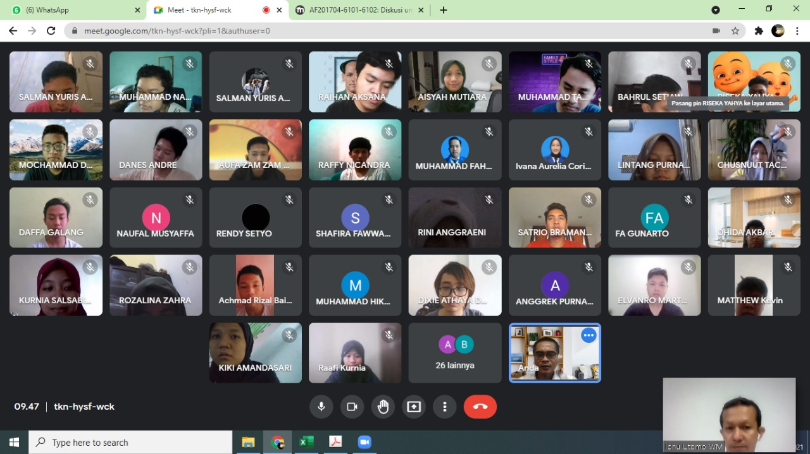

Matrikulasi Sistem Informasi S1 Tahun 2021
Matrikulasi adalah sebuah program yang diselenggarakan dari kampus untuk masa pengenalan bagi mahasiswa baru.
Matrikulasi wajib diikuti oleh mahasiswa baru, karena matrikulasi ini penanda pertama bagi mahasiswa baru agar mengetahui
sebagian aktivitas yang selalu dijalankan selayaknya seorang mahasiswa.
Dalam kegiatan matrikulasi, saya sebagai mahasiswa baru dikenalkan beberapa kegiatan kampus.
Seperti diberi pengenalan tentang computational thinking dan diberi 2 sks pengantar teknologi informatika.
Pada saat matrikulasi sangat menyenangkan bagi saya, karena saya mendapatkan suatu gambaran bagaimana dunia perkuliahan,
dan saya pun bangga menjadi mahasiswa di Universitas Dian Nuswantor Semarang.
Daftar Materi Praktek Paling Favorit
- Dasar Komputasi
- Pengantar Teknologi Informasi
- Konsep Sistem Informasi
Daftar Dosen
- Novi Hendriyanto,M.Kom
- Dr.Eng.Farikh Alzami,M.kom
- Dr.Drs.Abdul Syukur,MM
